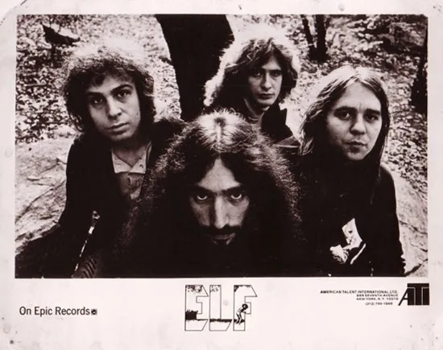
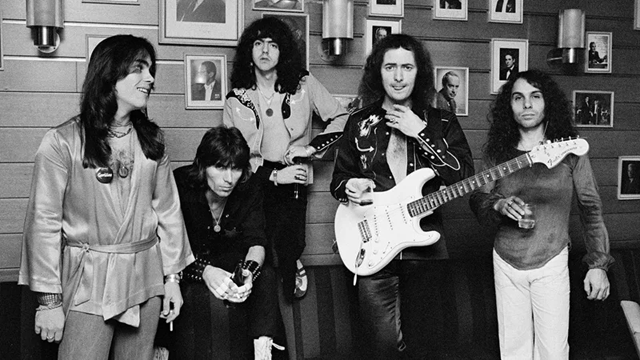
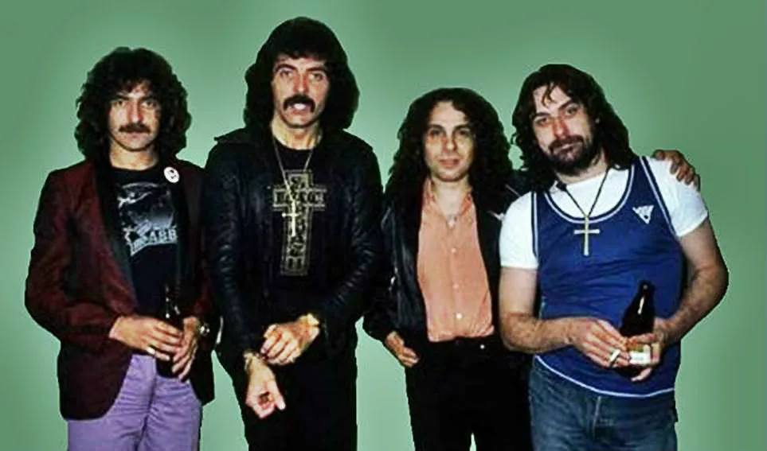
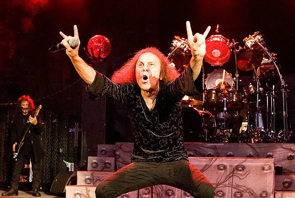
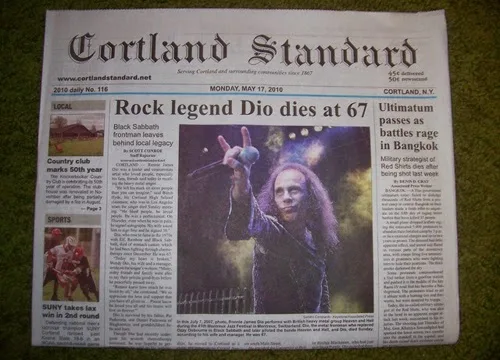
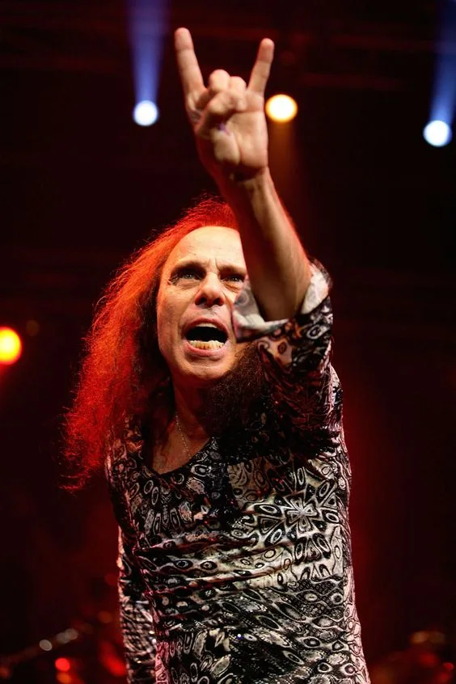

Han pasado 10 años, y todos los 16 de Mayo siguen siendo un día donde recordamos la carrera de Ronnie James Dio.
Una de las voces más emblemáticas e influyentes de la historia del heavy metal y el hard rock, siendo citado a menudo como "la voz del heavy metal" y el más grande vocalista de Rock de todos los tiempos, quien partiera en el 2010 tras luchar una batalla de meses contra un maldito cáncer de estómago letal que terminó con él.
Cuántos no disfrutamos escuchar a Black Sabbath, Rainbow, Elf, Heaven and Hell y el mismo grupo Dio. Ronnie James Dio fue un gran músico, compositor y vocalista con una voz inconfundible, esa exquisita combinación de voz, timbre y registro le daba una técnica difícil de igualar, deleitaba a todo aquel que lo escuchaba amante del género.
No debemos olvidar que fue el primer rockero en incluir el símbolo de los cuernos, ese que nos distingue del resto, llamado el "Malocchio", por el que se solía espantar a los demonios, tal como lo hacía su abuela.
Ya desde sus inicios un joven Dio mostraba su potencial en Elf, con un estilo más cercano al Rock and Roll (por cierto, muy recomendable esa etapa). Publicó tres discos: Elf, disco homónimo de 1972, Carolina County Ball de 1974 y Trying to Burn the Sun del 75, donde pudimos verle mostrando sus dotes, no solo con las cuerdas vocales, sino también en el bajo.

El talento de Ronnie llamó la atención del mismísimo Ritchie Blackmore, ex-guitarrista de Deep Purple quien lo fichó rápidamente para ser el cantante de su banda Rainbow, con quienes grabó tres diamantes en bruto, el "Ritchie Blackmore`s Rainbow", Rising" y el "Long Live Rock and Roll", convirtiéndose en uno de los grandes conjuntos de los 70. La lucha de egos llevó a nuestro Ron a marcharse, pero la versión extra oficial señala que lo miembros de la banda, en especial Dio, no estuvieron para nada de acuerdo en el cambio tanto lírico como musical que Blackmore quería darle a Rainbow (hacia un sonido más comercial) y este último optó por despacharlos a todos.

La historia solo había comenzado para nuestro pequeño artista ya que a comienzos de 1979, tras su salida de Rainbow y ya con un nombre lo suficientemente reconocido, Ronnie James Dio recibe una llamada del guitarrista Tony Iommi, la idea inicial era formar un proyecto juntos, aparte de Sabbath, pero la situación interna en la banda de los Sabbaths ya no daba para más, Ozzy fue despedido, por lo que Iommi contactó nuevamente a Dio, esta vez para que se hiciera cargo de las voces en la agrupación inglesa. Iommi invitó a Dio a su casa en Los Angeles para conversar acerca de la posibilidad de que se uniese a él y continuaran con Sabbath. Tras la expulsión de Ozzy Osbourne como cantante de Black Sabbath, Dio entró en la banda para asumir la difícil tarea de sustituir a el "Madman", pero, sorprendentemente, el pequeño Ron cumplió con su papel y emuló a su predecesor con dos obras maestras como Heaven and Hell (Obra magna) y el tremendo Mob Rules. Las comparaciones de estas dos etapas siempre conllevan largas horas de debate, por lo que respetamos a los fanáticos de la era de Ozzy y a los que prefieren la de Dio. Pero, ¿y qué pasó las canciones de Sabbath con Ozzy? Sin miedo alguno las cantó y por si fuera poco las mejoraba con su estilo (si no me creen escuchen el Live Evil, y en especial el Children of the Grave).

Tras su despido de Sabbath, por diferencias con Iommi y Geezer, formó su banda homónima, donde nos regaló grandes discos como el Holy Diver (uno de los que mejor representan al Heavy Metal), en el que están incluidos temas como "Stand Up and Shout", "Rainbow in the Dark", "Don`t Talk to Strangers", "Caught in the Middle" y, por supuesto, nuestra amada "Holy Diver", el gran "Last In Line", donde se mantuvo el sonido de su predecesor y los ochenteros "Sacred Heart" y "Dream Evil", sin obviar otras grandes obras que sacó en esta etapa.
Pasando algunos años, Geezer se reencuentra con Dio y en una salidita de tragos, comenzaron a conversar acerca del abrupto fin que le dieron a aquella formación de Black Sabbath, en 1982. Geezer quien había vuelto a formar parte de Sabbath, decidió contarle a Iommi de su reunión con Dio y ver si le interesaba la idea de juntarse nuevamente. Tony se mostró interesadísimo en la idea, así que convencieron a Dio y este decidió intentarlo nuevamente en la banda de Birmingham. El regreso a Black Sabbath supuso la grabación del demoledor "Dehumanizer", donde la banda mostró su lado más curo, ese que tanto les caracterizó en sus inicios, la voz de Ronnie es gloriosa. Después siguió sacando discos en solitario, hasta que nuevamente a comienzos del 2007, nuevamente se reunió con sus valedores de Sabbath bajo el nombre de "Heaven and Hell", debido a problemas legales causados por Sharon Osbourne (para variar...). Independientemente de este hecho, publicaron el oscuro "The Devil You Know", donde parece que estamos escuchando al mismísimo demonio cantar. Las giras de aquel tiempo fueron muy buenas, aunque en la última época, con un cáncer muy avanzado, Dio salió a cantar con dolores de estómago muy fuertes. Como un profesional, nunca suspendió un concierto. Su última aparición pública de Ronnie James Dio se produjo durante el 8 de abril del año 2010, cuando ganó el premio como “Mejor Cantante de Metal”, por su trabajo en su último disco, The Devil You Know.


El Heavy Metal y el mismísimo Satanás te deben demasiado Ron, esos cuernos que se elevan en los conciertos de Rock y de Metal que representan el género que pusiste muy en alto, tus diversas letras de amor, mitología, dragones, caballeros, odio, cielo, infierno, tu entrega a los fans hasta en tus peores momentos, mostrando siempre el cariño hacia los incondicionales, por tu manera de pensar y de transmitir las cosas, por darlo todo siempre, por tu lucha y tu entrega, por tu talento, por tus discos y canciones y por tu eterno legado.
¡LONG LIVE TO THE MAN ON THE SILVER MOUNTAIN…
LONG LIVE RONNIE JAMES DIO!!!
